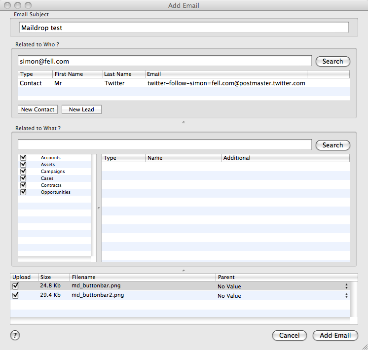
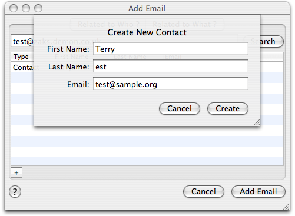

The Add Email Window
When you choose to "Add an Email to Salesforce.com" from either Mail or Entourage you'll be presented with the Add Email window.

This window consists of 2 sections, the top one allows you to select Who the Email is related to, by default the search box will be populated with the email address of the sender, and the search results populated. (This list can contain Contacts and/or Leads). Simply select the relevant record, or enter a different search term into the text box and click search.
If you need to create a new contact or lead record for this email, click the new contact or new lead button below the search results to open the create contact panel, to quickly create a new contact.

On the lower section, you can pick What the email is related to, this includes standard objects such as accounts, opportunities and cases as well as any custom objects that you have that have activities enabled on them. Click the check-mark next to each object that you'd like to search against, enter a search term into the check box and hit search. Select the item from the results list box.
Once you've selected the Who and What's (if you want to, its not required), go ahead and click "Add Email" in the bottom right hand corner and Maildrop will go ahead and create the activity, then open it in the browser for you.